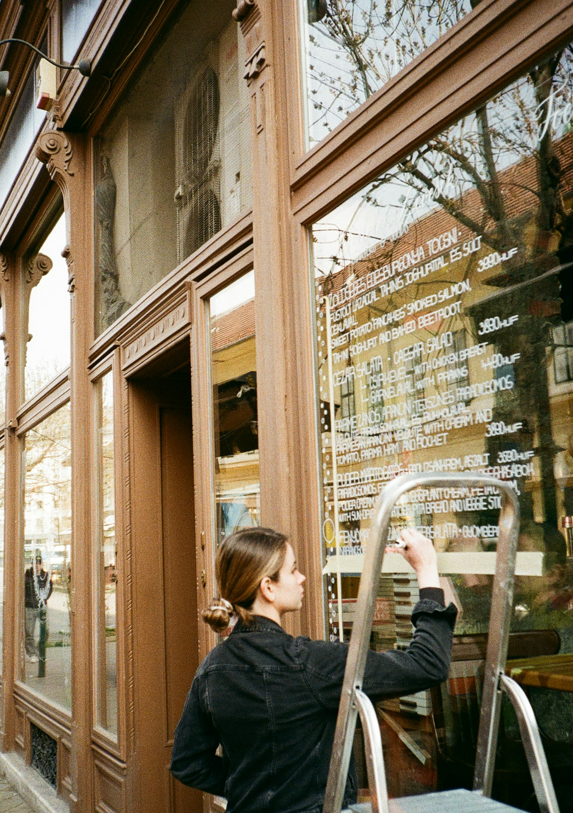
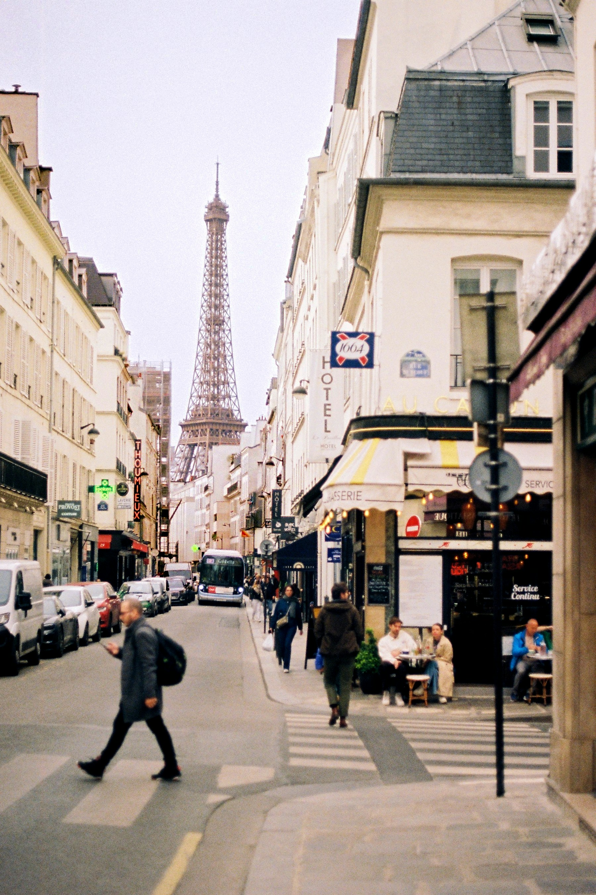
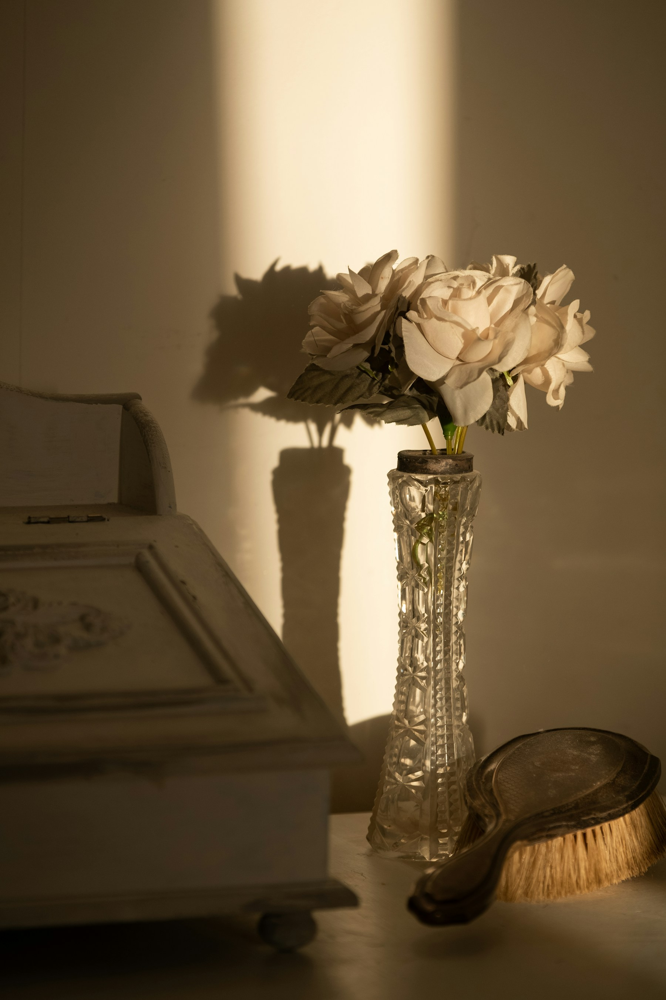
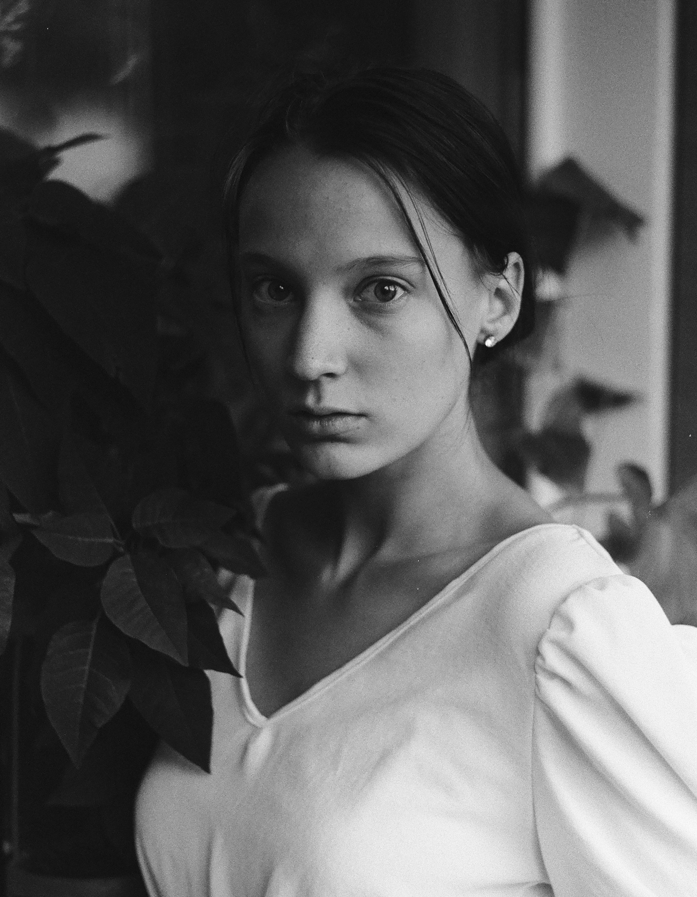

SHORT FILM
Passing time
Moving images, in the making.
IN DEVELOPMENT2026

Moving images, in the making.
IN DEVELOPMENT2026
Objects, arrangements, and quiet experiments.
WORK IN PROGRESS2026I'm Jade. I collect the ordinary: a passing face, an empty street, the way light stays in a room.
This archive is a space for photographs, unfinished observations, and eventually, moving images.
